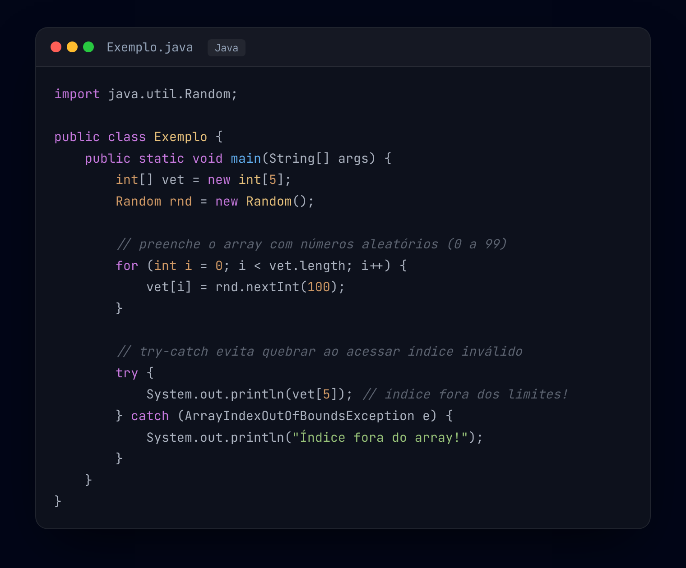

Java é uma linguagem orientada a objetos, usada em sistemas, aplicativos e back-end web. É fortemente tipada: todo dado precisa ter seu tipo definido (int, String, double) antes de ser usado.
A biblioteca java.util.Random gera valores aleatórios a partir de um objeto da classe
Random. Métodos mais usados:
nextInt() — números inteiros.nextDouble() — números decimais.nextBoolean() — verdadeiro ou falso.Muito utilizada em jogos, sorteios e simulações.
⚠️ Acessar uma posição fora dos limites dispara ArrayIndexOutOfBoundsException. Combinar arrays + Random + try-catch deixa o programa mais robusto (veja o exemplo abaixo).
int[] vet = new int[5] preenchido com Random — índices de 0 a 4. Acessar vet[5] está fora dos limites e dispara ArrayIndexOutOfBoundsException (use try-catch).